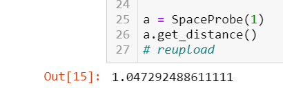

תודההההההההההההההההההההה
TypeError: string indices must be integers
ניסיתי להבין מפה איך לפתור ולא מצאתי(גם באינטרנט קראתיהסבר אבללאל מובן)
אין היגיון בשגיאה כי הקוד עובד
help
https://solve.pythonic.guru/view/103992
המלל “the prob passed…” זה מה שחוזר ב return?
הבנת מצוין רק המימוש לא תואם ב-100% - שים לב לערך החזרה המייצג מילולית את המרחק ולא את המרחק עצמו.
היה מצופה כי הערך שיוחזר יהיה מספר המייצג את המרחק וככה כל מי שהיה קורה למתודה הזו יכל להשתמש בו כרצונו (למשל, להציג אותו בצורה מילולית למשתמש) 
כן, אבל בהוראות לא כתוב שום דבר על ערך החזרה. כתוב שהיא מחשבת. מה גם שהערת הבודק בכלל קשורה לחיבור בין INT ל STR
אתה החזרת string, הבודק ציפה ל int. בדיוק מה שהערה אמרה
אבל בהוראות התרגילים, כשיש ציפיה ספציפית לערך החזרה, אז זה מצוין בהוראות. פה זה לא צוין, אלא ההוראות אמרו שהפונקציה מחשבת את המרחק. זה מה שהיא עושה. באמת, אם אין לנו יד חופשית אז זה בסדר גמור, אבל יהיה קצת יותר מתחשב לציין את זה במדויק. במקרה הזה ישבתי מעל 5 שעות כדי להבין מה הבודק רוצה. אם היה מצוין בתרגיל שהפונקציה ‘מחזירה את המרחק’, הטעות הזאת בכלל לא היתה קוראת, משום שאני מאוד מקפיד על לקיים את הוראות התרגילים כלשונם. וגם אם כן, הייתי מבין את זה לבד תוך שניה
בעת קריאה ל-read_inbox מצופה כי תוחזר רשימה של הודעות ולא רק התוכן שלהם
שזה גם הגיוני ממש כי ככה אנחנו נותנים את כל המידע הרלוונטי על ההודעות ונותנים יד חופשית למי שישתמש במחלקה זו.
תודה תותח! אני משום מה כל שניה ערכתי את הsearch כי ראיתי תגובה שלך על search
תוקן בשניה
לייק 1
שיניתי את ההחזרה רק לחישוב המרחק.
עכשיו זה…
{kind=link}
לפני כן זה לא היה. אין שום מצב שחוזר מספר שלילי, זה חישוב מאוד מאוד פשוט
הצבת מהירות 1 וראית מה התוצאה שהתקבלה?
כן, במקרה כזה עוברת קילומטר בשעה

התסכול שלך מובן וחשוב לי להדגיש כי זו לא הייתה מטרתנו בשום שלב.
בנוסף, אנו רוצים לבנות את ההבנה שלכם בצורה מיטבית ולכן לא תמיד נרצה להיות סופר מדויקים ולאתגר אתכם. אמנם במקרה זה ההערה של הטסט לא הייתה ברורה אך אני לא חושב שהניסוח היה לוקה וקורה לכולם שזה לא ישר 100% מובן וזה בסדר.
גם אנחנו טועים ולומדים לאורך הדרך וכבר איגדנו מספר תובנות לתרגילים של השבועות הבאים
טוב זו כבר טעות הזויה ואפילו קצת מצחיקה: השעון של השרת לא על פי שעון ישראל ומכיוון שהגדרת שעה ספציפית של שיגור זה כביכול קורה בעתיד.
תגדיר שהשיגור היה אתמול או פשוט עם datetime.now ויעבוד אחלה
לייק 1
אני רוצה להבהיר, שקודם כל, הכל מאוד מאוד מוערך, לפני הכל. ברור לי שגם אתם לומדים ומתקנים תוך כדי תנועה. במקרה הזה, שרפתי חצי יום בעצם על כלום, וזה כמובן יוצר תסכול מסוים. זה לא משנה כלום מההערכה אליכם, ולהשקעה שלכם
2 לייקים
קובי, קודם כל אגיד שאני מעריך אותך ואת ההשקעה שלך בקורס. זה נכון לגבי כל חניך שנאבק עם תרגילים ומצליח להתמודד איתם לאורך זמן.
יחד עם זאת חשוב לי להיות שקוף והוגן איתך. עיקר הפער הוא שיש הבדל בין “נותנים יד חופשית” לבין “לא כותבים במפורש מה לעשות, כי חלק מהתרגיל בוחן יכולת להתמודד עם סיטואציות מהעולם האמיתי”.
המקרה שפה הוא המשפט השני. בעולם האמיתי אתה לא מחזיר מחרוזת עם מספר כשהערך הוא כמותי, ולכן הבודק האוטומטי הכשיל את התרגיל הזה.
לצד העובדה הזו, חשוב לי שאף חניך לא ישב 5 שעות כשהוא clueless ליד תרגיל. אני מאוד מעריך את הזמן של כל החניכים, ופעם הבאה עדיף אחרי כשעה של גירוד בראש לכתוב בפוסט מפורט מה הבעיה ומה נראה לך שהפער, לעבור לתרגיל אחר ולחכות לפידבק מהסגל.
בטוח שכולנו למדנו מהסיטואציה, בכל מקרה. בהצלחה בהמשך הקורס
5 לייקים
היי,
עבדתי על הקוד שוב ושיפצתי. אני עדיין לא מוצאת מה לא בסדר.
118 סקרנות:
https://solve.pythonic.guru/view/104102
עבדתי שוב על דרישות השאלה, ווידאתי שהכל עובד. אני לא מבינה מה לא עובד כצפוי.
123 חללר:
https://solve.pythonic.guru/view/104138
סידרתי את הערך המוחזרת במתודה get_distance, זה עכשיו נותן לי שגיאה על השוואה בין STR ל INT ואני לא רואה איפה אני עושה השוואה כזאת.
תודה
לא הכל עובד בכל המקרים. הפעולות add_item ו־remove_item בעייתיות.
שחקי עם אפשרויות כמו “Ron” ו"Ronaldo" כדי להבין איפה הבעיה
ראי הודעה מעליך
תודה על התגובה המהירה!!!
אנסה לחשוב
היי,
בצב שילוח 2
מה זה אומר?
בדיקת מחלקת Message
AssertionError: assert 12 == 14 + where 12 = len(<test_checks.Message object at 0x7f2e03ae9ee0>) + and 14 = len(‘Hello, Newman.’)